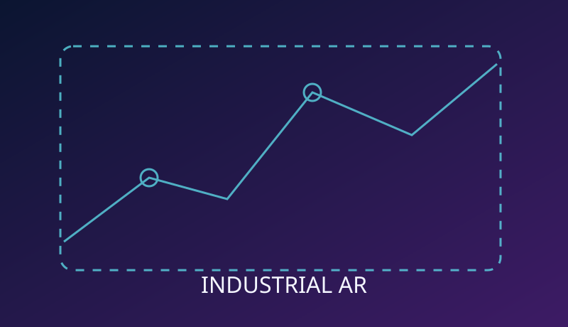

AR Industrial Maintenance Co-Pilot
A low-cost student-team research direction for contextual industrial maintenance assistance.

Visual is an illustrative concept, not a screenshot or measured model output.
Overview & Objective
A low-cost student-team research direction for contextual industrial maintenance assistance.
Tools & Architecture
Vision-language models, visual recognition, AR overlays and guided maintenance.
Implementation Workflow
Equipment camera → component recognition → instruction retrieval → AR guidance → operator confirmation.
Dataset / Scope
Feasibility and small-scope industrial use cases were discussed.
Results & Current Status
Concept/research idea only; no implemented prototype or measured outcomes are claimed.
Visuals & Evidence
The illustration above explains the project theme. Actual training curves, screenshots, model predictions, or evaluation plots can be added when verified source artifacts are available. No synthetic visual is presented as a real experimental result.